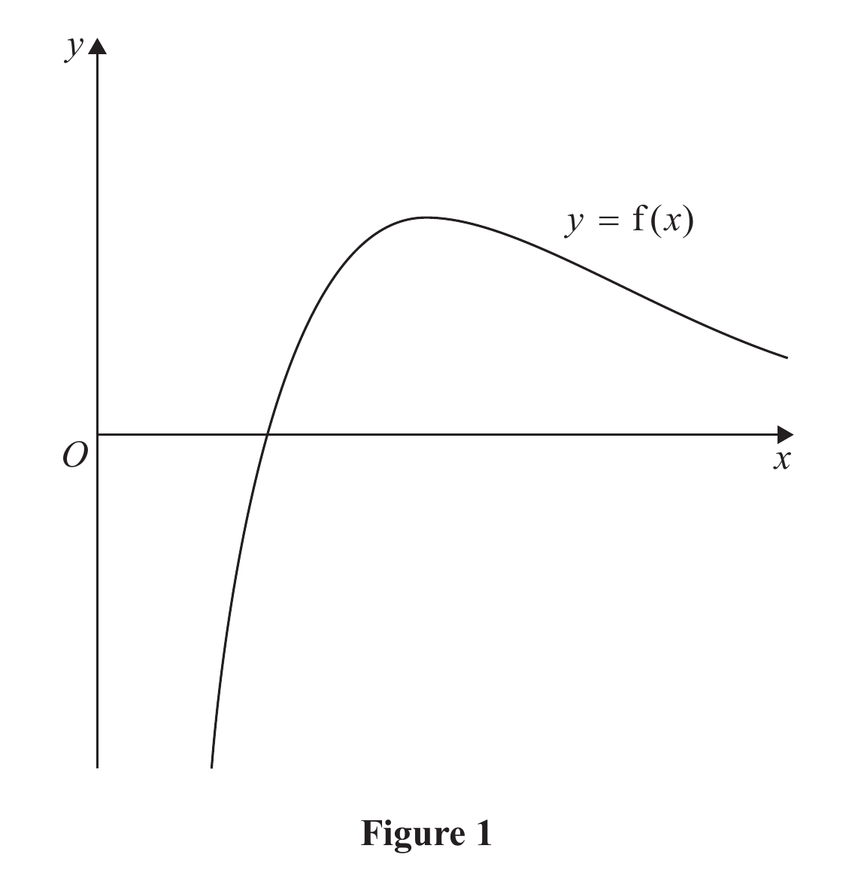
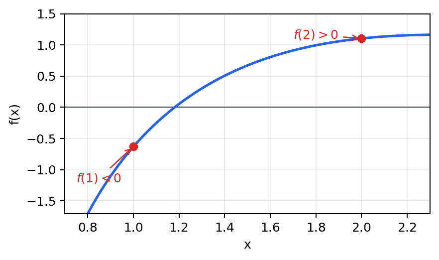

Figure 1 shows a sketch of part of the curve with equation $y=f(x)$, where

$$f(x)=\frac{2x^2+3x-4}{e^x}-\frac{1}{x^2},\qquad x\in\mathbb R,\ x\ne0.$$
(a) Show that $f(x)=0$ has a root $\alpha$ in the interval $[1,2]$. (2)
(b) Show that the equation $f(x)=0$ can be written in the form $$x=\sqrt[3]{\frac{e^x+4x^2}{2x+3}}.$$ (2)
Using the iteration formula $$x_{n+1}=\sqrt[3]{\frac{e^{x_n}+4x_n^2}{2x_n+3}},\qquad x_1=1,$$ find, to 4 decimal places, (c)(i) the value of $x_3$, (ii) the value of $\alpha$. (3)
[7 marks: (a) 2, (b) 2, (c) 3]
Strategy. Evaluate the function at the stated endpoints and explicitly establish continuity on the entire interval.
$$f(1)=\frac{1}{e}-1=-0.6321205588\ldots<0,$$ $$f(2)=\frac{10}{e^2}-\frac14=1.1033528324\ldots>0.$$On $[1,2]$, neither $e^x$ nor $x^2$ is zero, so $f$ is continuous there. Since the endpoint values have opposite signs, the Intermediate Value Theorem gives at least one root $\alpha\in(1,2)$.
Separate answer diagram. This explanatory sign-change diagram belongs to the worked answer; the untouched official Figure 1 remains in the question block.

Strategy. Clear both denominators, collect the terms needed for a factor of $x^3$, and only then take a real cube root.
$$\frac{2x^2+3x-4}{e^x}=\frac1{x^2}$$ $$x^2(2x^2+3x-4)=e^x$$ $$2x^4+3x^3-4x^2=e^x$$ $$x^3(2x+3)=e^x+4x^2$$ $$x^3=\frac{e^x+4x^2}{2x+3}.$$Taking the real cube root gives
Deferred in the lesson — official-reference continuation below.
Strategy. Define
$$\phi(x)=\sqrt[3]{\frac{e^x+4x^2}{2x+3}}$$and repeatedly use $x_{n+1}=\phi(x_n)$, retaining the unrounded calculator value at every stage. Starting with $x_1=1$:
$$x_2=\phi(1)=1.103475608864715\ldots$$ $$x_3=\phi(x_2)=1.148358495932474\ldots$$Therefore, to four decimal places,
Continue without intermediate rounding.
| $n$ | Unrounded stored value of $x_n$ |
|---|---|
| 4 | 1.167448983821693 |
| 5 | 1.175501106242521 |
| 6 | 1.178885390308852 |
| 7 | 1.180305681867850 |
| 8 | 1.180901367683795 |
| 9 | 1.181151139474252 |
| 10 | 1.181255857603215 |
| 11 | 1.181299759207154 |
| 12 | 1.181318163982785 |
| 13 | 1.181325879715189 |
| 14 | 1.181329114328095 |
| 15 | 1.181330470350471 |
The values stabilise at $1.1813$ to four decimal places, so
Substitution check. Using the rounded answer in the original function,
$$f(1.1813)=-9.0176\times10^{-5},$$which is close to zero. Using the converged stored value $1.18133145$ gives $f(1.18133145)\approx2.39\times10^{-9}$, confirming the root to substantially more than four decimal places.